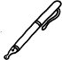

Günlerden bir gün Amerika'da bir grup Türkiyeli aydınla kesişiyor yolum. Tanışıyorum her biriyle teker teker. İsimler, tebessümler, takdimler... tanışma sıcak, doğal, kendiliğinden. Derken sıra bir başkasına geliyor, o da zannınca münevver. Elimi uzatıyorum "merhaba" diyerek çünkü benim yaşadığım evrende insanlar birbirlerini böyle selamlar, böyle karşılar. Çünkü benim kitabımda selam "kelam" demektir, kelam ise özün özü. Ama elim havada asılı kalıyor. Adam elimi sıkmıyor. Benden esirgediği tokalaşmayı berikilerden esirgemiyor ama. Tek tek tokalaşıyor berikilerle, erkeklerle. Benimle tokalaşmıyor. Geri çevirdiği elimin gönlünü almak için herhangi bir hamlede bulunma gereği de duymuyor. Ne alıp kalbine götürüyor elini ne baş kırıyor. Sanki elim ve dolayısıyla ben ayaklı bir kusurmuşuz gibi yüzünü başka yana çeviriyor. Elimi sıkmayan adam kendini "iyi bir Müslüman", beni de sadece ve sadece "kadın" addediyor. Sahneyi olduğu gibi muhafaza edip karakterleri değiştirerek düşünüyorum. Diyelim ki iki farklı ırktan insan buluşup merhabalaşıyorlar. Sonra biri ötekinin uzattığı eli havada asılı bırakıyor, sıkmayı reddediyor. Çünkü beriki farklı bir ırktan, mesela siyah. Ya da iki insan buluşuyorlar, ikisi de farklı milletlerden. Biri ötekinin elini sıkmayı reddediyor, çünkü beriki başka milletten, mesela Yunanlı ya da Ermeni ya da Yahudi. Bir Türk bir Yunanlının, bir Amerikalı bir Iraklının, bir Fransız bir Cezayirlinin ya da beyaz bir adam siyah bir adamın elini sıkmadığında ne hissedersiniz? Bu durumu nasıl tanımlarsınız?
Benim bildiğim bunun adı ay-rım-cı-lık-tır. Düpedüz. Dosdoğru. Seni, senin yaratmadığın, içine doğduğun, doğuştan edindiğin kimlikten, kisveden, suretten ve bedenden ötürü, ya kendinden hakir ya da kendinden uzak görerek öteliyorsa biri, bunun adı ay-rım-cı-lık-tır. "Yaradılanı sev, Yaradan'dan ötürü" diye fısıldayan ve "Bir gönül kırdın ise bu kıldığın namaz değil" diyen tasavvuf geleneği, kadının elini sıkmamak suretiyle böyle orta yerde kalbini, onurunu, haysiyetini inciten ve onu öteleyen, meclislerden dışlayan bu davranışı nasıl olur da içine sindirir? Sindirir mi? Sahi?
Elimi sıkmayan adam! Sanmam ki taşları ayrımcılıkla döşenmiş bir patika olsun buradan cennete uzanan...
* * *
"Elimi Sıkmayan Adam" yayımlanalı sadece dört gün geçti, ama şimdiye değin mübalağasız iki yüzden fazla e-mail almış olmalıyım. Gelen mesajların hepsine birer birer cevap yazmam mümkün olmadı, affola, ama hepsini dikkatle, ilgiyle satır satır okudum. Yazı ABD'de yaşayan Türk öğrenciler ve akademisyenler arasında da dolaşıma girince, bir tartışma da burada çıktı. İlginçtir, Amerika'daki Türklerden gelen mesajların hemen hepsi olumlu, yapıcı ve en önemlisi "dingin"di. Bunların büyük çoğunluğu fikirlerime katıldıklarını ifade ediyor, ama en çok da böyle bir konunun işlenmiş olmasına hayretlerini ifade ediyordu. Arada, eski önyargılar hortlamadı değil. Belli ki gene dayanamayıp "Ama siz de niye o dincilerle, onlarla muhatap oluyorsunuz ki?" diyenler de çıktı; o bildik, tanıdık, bir-türlü-kurtulunamadık "onlar" ve "biz" ayrımını üst perdeden yineleyerek. Sonra Almanya'daki okurlardan mesajlar geldi. "Ocakta, sacda cızırdayan meseleler vardır; bunlar çıplak elle tutulmaz, kaleme alınmaz. Kadın-erkek tokalaşır mı konusuna elimizi uzatamayız, yani bu meseleyle tokalaşamayız, çok zor" diye yazdı, senelerdir Almanya'da ikamet eden okurlardan biri. Sonuna da bir hamiş ekledi: "Ama kimse uzanmazsa bu sefer de cızırdaya cızırdaya kömür olacak sacdakiler, ocaktakiler. Demek ki mesele çıplak elle uzanmamak... tutalım, tutalım ama bir maşayla tutalım; bir maşa lazım."
Maşayı bilmem ama yazmak için dört şey gereklidir benim bildiğim: kalem, kâğıt, fikir ve en önemlisi, üslup. İlk üçü tamam, hani nerdeyse gani gani memlekette, ama dördüncüsü kıt kaynak, az bulunur, az rastlanır. Üsluptan yana sıkıntıda yazı da söz de. Hani eski laftır: Üslup var vezir eder insanı, üslup var rezil eder insanı. Yazmak, yazarlık, cümlelerle, kelimelerle iştigal etmek üslubun kıymetine varmayı gerektirir. Yazmanın ilk koşulu: Aynı cümleyi söylemenin birden fazla yolu vardır, hangisini seçeceksin? Aynı şeyi dile getirmenin ayrı ayrı usulleri vardır. Hangisinde karar kılacaksın? Yollardan yol beğen ki akacak mecra bulasın.
Türkiye'den gelen mesajların hiç de azımsanmayacak bir kısmı geçen haftaki yazıyı bir "üslup" eleştirisi olarak okumuş ve bu düzlemde tartışmış, haklı bulmuş. Ama üslubu ve üsluba verilen önemi görmeden, anlamadan, dosdoğru konudan nem kapanların sayısı da kabarık. Bunların bir kısmı tek kelimeyle "hakaretamiz" idi. Sadece ben değil, yazımı basan kurum ve editör de hakaretlere maruz kaldı. Ve bir kez daha anladık ki incecik, saç telinden bir hudut boyu var bir yazarı "yücelterek heykelleştirerek benimsemek" ile "topyekûn defterden silmek" arasında. Biz yazarlar, sanatçılar bu incecik sınır boyunda bir ip cambazı gibi titrek adımlarla gidip geliyoruz aslında. Aman, sakın, suya sabuna dokunma; tepki toplayacak meselelere uzanma, çiçeklerden, hayallerden ve gelmeyecek geleceklerden bahset, hududu çiğneme, haddini aşma. Çünkü ya çok sevilir baş tacı edilirsin, sen olmaktan çıkıncaya değin suretin; ya da partizanca reddedilir tüm eserlerin, kimliğin, ismin. Peki ya ortası? Ötesi? Ötesi, Beşir Fuat'ın dediği gibi: "Ötesi... hiç".
Ama işte tüm bunların yanı sıra hayli ilgimi çeken ve açıkçası beni bile iyimser kılan bir şey daha var. Kadınlardan, bilhassa muhafazakâr ailelerden gelen kadınlardan aldığım mektuplardaki üslubun inceliği, derinliği, olgunluğu ve sükûneti. Karşıdakini anlamaya, kendini anlatmaya çalışanların üslubu. Benim görüşlerime katılmazken, hatta bunlara içerlerken ya da kızarken dahi saygıyı, nezaketi, diyaloğu ve kelamı unutmayanların üslubu. "Bu haftaki yazınıza hiç katılmadım ama bilin ki eşim ve ben Pinhan'dan bu yana baki okurunuz ve duacınızız" diye biten mektuplar. Ben en çok onlara takıldım.
Eğer bir ideolojik çekişme var ise bu topraklardan çıkma kalemşorlar sathında, bu zihinsel ve ruhsal bölünme temelde ne sağ ile sol, ne de damga pulu gibi üstümüze yapıştırılan "İslamcı" ile "Kemalist" yaftaları arasında. Esas fark "buyurmak ve duyurmak" için yazanlar ile "anlamaya ve anlaşılmaya yönelik" yazanlar arasında.
New York